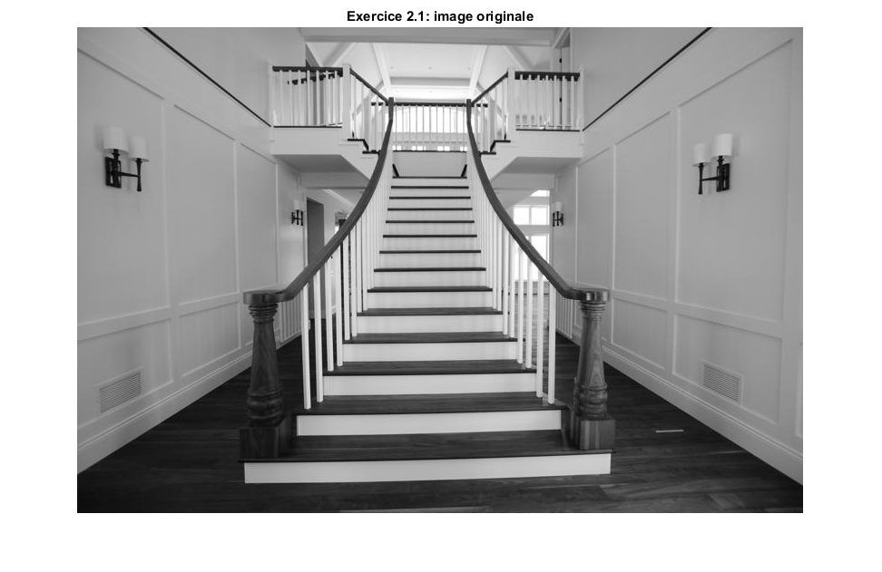

% Exercice 1
% Exercice 1.1 img_ford = imread('Formula_Ford.png'); figure(1) imshow(img_ford) title('Exercice 1.1: image originale') % Exercice 1.2 angle = rad2deg(atan2(16,31)); juste_h = fspecial('motion', 30, angle); % Exercice 1.3 img_panic = deconvwnr(img_ford,juste_h,0); figure(2) imshow(img_panic) title('Exercice 1.3: image déconvoluée avec K=0') % L'image est complètement ruinée à cause du bruit. Il est extremement % difficile de trouver des morceaux de l'image originale dans ce mer de % bruit. % Exercice 1.4 meilleur_k = 0.001 / sqrt(var(im2double(img_ford(:)))); % Exercice 1.5 img_ok = deconvwnr(img_ford, juste_h, meilleur_k); figure(3) imshow(img_ok) title('Exercice 1.5: image déconvoluée avec le meilleur K')
Exercice 2
% Exercice 2.1 img_stairs = imread('escaliers.jpg'); figure(4) imshow(img_stairs) title('Exercice 2.1: image originale') % Exercice 2.2 type Filtre_Canny.m th = 71; gauss = fspecial('gaussian'); img_f = Filtre_Canny(img_stairs,gauss,th); figure(5) imshow(img_f,[]) title('Exercice 2.2: image après Canny') % Exercice 2.3 type Calculer_Precision.m % Exercice 2.4 img_stairs_true = im2bw(imread('escaliers_TrueSeg.jpg'), 0.5); [performance, tauxFauxPositif, tauxFauxNegatifs] = Calculer_Precision(img_f, img_stairs_true); disp('Performance: '); disp(performance); disp('TPF: '); disp(tauxFauxPositif); disp('TFN: '); disp(tauxFauxNegatifs); %On remarque que la performance tourne autour de 26,77% dans le meilleur %des cas, soit un threshold avec une valeur de 71. %Si l'on augmente la valeur de ce threshold, on peut remarquer qu'il y aura %moins de pixels blancs dans l'image, donc on peut s'attendre a un taux de faux positifs %moins élevé. Par contre, on peut remarquer aussi que puisque le nombre de %pixels blancs diminue, le nombre de pixels noirs augmentera: c'est %évident. Puisqu'il y aura plus de pixels noirs, on peut s'attendre à ce que le taux de faux négatifs diminue. %Si l'on diminue la valeur du threshold, on remarquera qu'il y aura plus de %pixels blancs sur l'image, donc on peut s'attendre à un taux de faux %positifs plus élevé. Par contre, on peut remarquer aussi que puisque le %nombre de pixels blancs augmente, le nombre de pixels noirs diminuera. %Puisqu'il y aura moins de pixels noirs, on peut s'attendre à ce que le %taux de faux négatifs augmente. % Exercice 2.5 %canny edges = img_f [H, theta, rho] = hough(img_f,'Theta',-1:0.1:1); peaks = houghpeaks(H, 100,'NHoodSize',[21 21],'threshold',1); lines = houghlines(img_f,theta,rho,peaks); figure(6) imshow(img_stairs) title('Exercice 2.5: Image avec lignes verticales de Hough') hold on max_len = 0; for k = 1:length(lines) xy = [lines(k).point1; lines(k).point2]; plot(xy(:,1),xy(:,2),'LineWidth',2,'Color','green'); % Plot beginnings and ends of lines plot(xy(1,1),xy(1,2),'x','LineWidth',2,'Color','yellow'); plot(xy(2,1),xy(2,2),'x','LineWidth',2,'Color','red'); % Determine the endpoints of the longest line segment len = norm(lines(k).point1 - lines(k).point2); if ( len > max_len) max_len = len; xy_long = xy; end end % highlight the longest line segment plot(xy_long(:,1),xy_long(:,2),'LineWidth',2,'Color','red'); hold off
function [ imbin ] = Filtre_Canny( img, gauss, th )
%Filtre_Canny Exercice 2.2
tb = 0.4 * th; %Pourquoi? Parce que.
img_gauss = imfilter(img,gauss);
sobel_x = [-1, -2, -1;
0, 0, 0;
1, 2, 1];
sobel_y = [-1, 0, 1;
-2, 0, 2;
-1, 0, 1];
g_x = convn(img_gauss,sobel_x,'same');
g_y = convn(img_gauss,sobel_y,'same');
grad_module = sqrt(g_x.^2 + g_y.^2);
grad_angle = rad2deg(atan2(g_y,g_x));
grad_angle_cat = zeros(size(grad_angle,1),size(grad_angle,2),2);
for i = 1:size(grad_angle,1)
for j = 1:size(grad_angle,2)
e = grad_angle(i,j);
if (e > -22.5 && e <= 22.5) || (e > 157.5 || e <= -157.5)
grad_angle_cat(i,j,1) = 1;
grad_angle_cat(i,j,2) = 0;
elseif (e > 22.5 && e <= 67.5) || (e > -157.5 && e <= -112.5)
grad_angle_cat(i,j,1) = 1;
grad_angle_cat(i,j,2) = 1;
elseif (e > 67.5 && e <= 112.5) || (e > -112.5 && e <= -67.5)
grad_angle_cat(i,j,1) = 0;
grad_angle_cat(i,j,2) = 1;
elseif (e > 112.5 && e <= 157.5) || (e > -67.5 && e <= -22.5)
grad_angle_cat(i,j,1) = 1;
grad_angle_cat(i,j,2) = -1;
end
end
end
grad_module_padded = padarray(grad_module,[1 1]);
grad_angle_cat = padarray(grad_angle_cat,[1 1]);
for i = 2:size(grad_module,1)+1
for j = 2:size(grad_module,2)+1
grad = grad_module_padded(i,j);
grad_plus1 = grad_module_padded(i + grad_angle_cat(i,j,1), j + grad_angle_cat(i,j,2));
grad_minus1 = grad_module_padded(i - grad_angle_cat(i,j,1), j - grad_angle_cat(i,j,2));
if not(grad >= grad_minus1 && grad >= grad_plus1)
grad_module_padded(i,j) = 0;
end
end
end
img_bin = zeros(size(grad_module_padded));
for i = 2:size(grad_module,1)+1
for j = 2:size(grad_module,2)+1
if grad_module_padded(i,j) >= th
img_bin(i,j) = 255;
else
img_bin(i,j) = 0;
end
end
end
imlf_finale = zeros(size(grad_module_padded));
for i = 2:size(grad_module,1)+1
for j = 2:size(grad_module,2)+1
pixel_plus1 = img_bin(i + grad_angle_cat(i,j,1), j + grad_angle_cat(i,j,2));
pixel_minus1 = img_bin(i - grad_angle_cat(i,j,1), j - grad_angle_cat(i,j,2));
if (pixel_plus1 >= tb || pixel_minus1 >= tb)
imlf_finale(i,j) = 255;
else
imlf_finale(i,j) = 0;
end
end
end
imbin = img_bin(2:end-1,2:end-1);
end
function [ performance, tauxFauxPositif, tauxFauxNegatif ] = Calculer_Precision( imgSeg, imgRef )
%CALCULER_PRECISION Calculer_Precision
% Calculer_Precision
contourDetectes = sum(sum(imgSeg > 0));
contourReferences = sum(sum(imgRef > 0));
contourCorrects = sum(sum((imgSeg .* imgRef) > 0));
fauxPositifs = contourDetectes - contourCorrects;
fauxNegatifs = contourReferences - contourCorrects;
decimator = contourCorrects + fauxPositifs + fauxNegatifs;
performance = contourCorrects / decimator;
tauxFauxPositif = fauxPositifs / decimator;
tauxFauxNegatif = fauxNegatifs / decimator;
end
Performance:
0.2677
TPF:
0.4176
TFN:
0.3147
 Partie 2 Exercice 3
Exercice 3.1
img_chat = imread('chateau.jpg'); figure(7) imshow(img_chat,[]); title('Exercice 3.1: Image originale') % Exercice 3.2 type ObtenirLUT.m % Exercice 3.3 type Apply_LUT.m type Segmenter_Couleur.m % Exercice 3.4 lut = ObtenirLUT(8); img_chat_seg = Segmenter_Couleur(img_chat, lut, lut, lut); figure(8) imshow(img_chat_seg,[0 255]); title('Exercice 3.4: Image segmentee') %Puisque notre image est divisée en 8 pour chaque composant, on peut %s'attendre à ce que l'espace occupé par l'image quantifiée soit 8 fois %plus petit. % Exercice 3.5 lut_r = ObtenirLUT(2); lut_g = ObtenirLUT(2); lut_b = ObtenirLUT(2); img_chat_compare = Segmenter_Couleur(img_chat, lut_r, lut_g, lut_b); figure(9) imshow(img_chat_compare,[0 255]); title('Exercice 3.5: Image question 3.5')
Warning: Image is too big to fit on screen; displaying at 67%
function [ lookup_tbl ] = ObtenirLUT( nb_segs )
%UNTITLED Summary of this function goes here
% Detailed explanation goes here
delta = 255 / nb_segs;
lookup_tbl = zeros(nb_segs,2);
for n = 1:nb_segs
lookup_tbl(n,1) = round(delta*n);
lookup_tbl(n,2) = round((round(delta*n) + round(delta*(n-1))) / 2);
end
end
function [ out_value ] = Apply_LUT( in_value, lookup_tbl )
%APPLY_LUT Summary of this function goes here
% Detailed explanation goes here
x = 1;
while lookup_tbl(x,1) < in_value
x = x+1;
end
out_value = lookup_tbl(x,2);
end
function [ img_seg ] = Segmenter_Couleur( img, lut_r, lut_g, lut_b )
%SEGMENTER_COULEUR Segmenter_Couleur
% Exercice 3.3
img_seg = zeros(size(img,1),size(img,2));
for i = 1:size(img,1)
for j = 1:size(img,2)
img_seg(i,j,1) = Apply_LUT(img(i,j,1),lut_r);
img_seg(i,j,2) = Apply_LUT(img(i,j,2),lut_g);
img_seg(i,j,3) = Apply_LUT(img(i,j,3),lut_b);
end
end
img_seg = uint8(img_seg);
end
Warning: Image is too big to fit on screen; displaying at 67%
Warning: Image is too big to fit on screen; displaying at 67%
Exercice 4
% Exercice 4.1 img_science = imread('Albert-Einstein.jpg'); figure(10) imshow(img_science,[]); title('Exercice 4.1: Image originale (Albert)') % Exercice 4.2 lut_r = ObtenirLUT(4); lut_g = ObtenirLUT(4); lut_b = ObtenirLUT(4); img_science_paint = Segmenter_Couleur(img_science, lut_r, lut_g, lut_b); figure(11) imshow(img_science_paint,[]); title('Exercice 4.2: Art of Einstein') % Exercice 4.3 gauss = fspecial('gaussian',7,1); img_science_flou = uint8(convn(img_science_paint,gauss,'same')); figure(12) imshow(img_science_flou,[]); title('Exercice 4.3: Blurry Albert') % Exercice 4.4 red = img_science(:,:,1); % Red channel green = img_science(:,:,2); % Green channel blue = img_science(:,:,3); % Blue channel edges_r = Filtre_Canny(red,fspecial('gaussian'),230); edges_g = Filtre_Canny(green,fspecial('gaussian'),230); edges_b = Filtre_Canny(blue,fspecial('gaussian'),230); edges = (edges_r + edges_g + edges_b) ./ 3; edges = im2bw(edges,0.5); edges_inv = imcomplement(edges); figure(13) imshow(edges_inv,[]) title('Exercice 4.4: Edges of science') % Exercice 4.5 img_edges_flou = uint8(conv2(double(edges_inv),gauss,'same')); figure(14) imshow(img_edges_flou,[]); title('Exercice 4.5: Blurry Edges') % Exercice 4.6 img_r = double(img_science_flou(:,:,1)); img_g = double(img_science_flou(:,:,2)); img_b = double(img_science_flou(:,:,3)); img_edges_flou = double(img_edges_flou); img_r_ = img_r .* img_edges_flou; img_g_ = img_g .* img_edges_flou; img_b_ = img_b .* img_edges_flou; img_finale_einstein = uint8(cat(3, img_r_, img_g_, img_b_)); figure(15) imshow(img_finale_einstein(:,:,:), [0 255]); title('Exercice 4.6: Image finale')